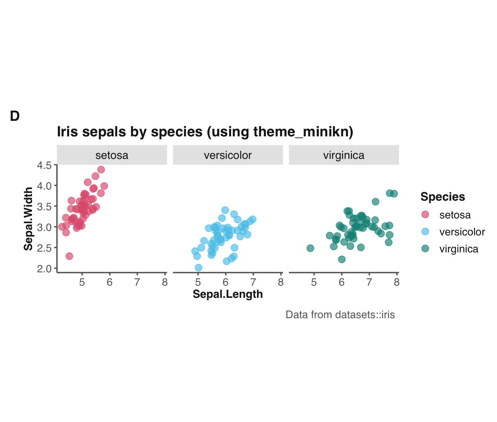

theme_minikn provides an alternative minimal theme
for use in ggplot2 and unikn contexts.
Arguments
- col_title
Color of text elements used for plot, axis and legend titles, as well as for strip titles. Default:
col_title = grey(.10, 1)(i.e., dark grey). Consider usingcol_title = unikn::pal_seeblau[[4]].- col_line
Color of line elements used for axis lines, text and ticks, and for plot caption and subtitle. Default:
col_line = grey(.40, 1)(i.e., medium grey).- base_size
Base font size (optional, numeric). Default:
base_size = 12.- base_family
Base font family (optional, character). Default:
base_family = "sans". Options include"mono","sans"(default), and "serif".- base_line_size
Base line size (optional, numeric). Default:
base_line_size = base_size/22.- base_rect_size
Base rectangle size (optional, numeric). Default:
base_rect_size = base_size/22.- axis_ticks_mm
Length of axis ticks (in mm). Default:
axis_ticks_mm = 1.
Details
theme_minikn is a minimal and no-nonsense,
and based on theme_minimal.
This theme works well for most visualizations that do not require grid lines or panel boundaries.
See also
theme_unikn for default theme;
theme_grau for a grey theme;
theme_bwkn for a bw theme.
Other plot functions:
slide(),
theme_bwkn(),
theme_grau(),
theme_unikn(),
xbox()
Examples
# \donttest{
# Plotting iris dataset (using ggplot2, theme_grau, and unikn colors):
library('ggplot2') # theme_minikn requires ggplot2
ggplot(datasets::iris) +
geom_jitter(aes(x = Sepal.Length, y = Sepal.Width, color = Species), size = 3, alpha = 2/3) +
facet_wrap(~Species) +
scale_color_manual(values = usecol(pal = c(Pinky, Seeblau, Seegruen))) +
labs(tag = "D",
title = "Iris sepals by species (using theme_minikn)",
caption = "Data from datasets::iris") +
coord_fixed(ratio = 3/2) +
theme_minikn()

# }